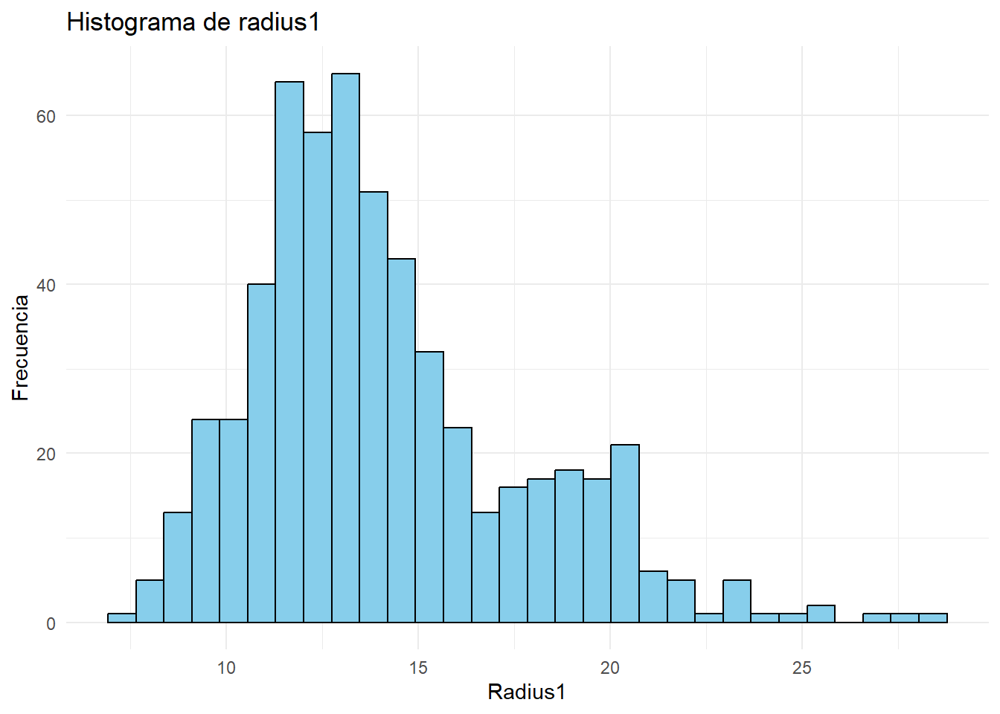
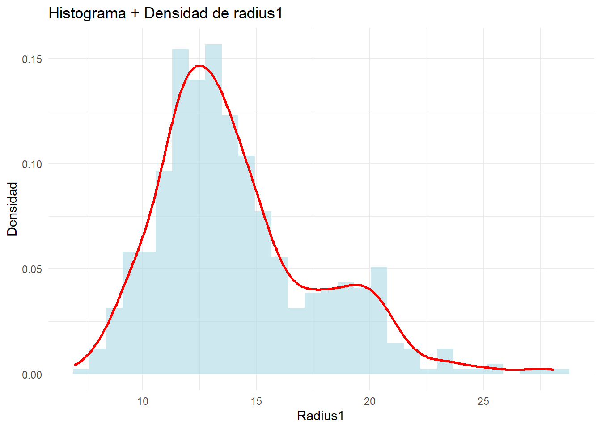
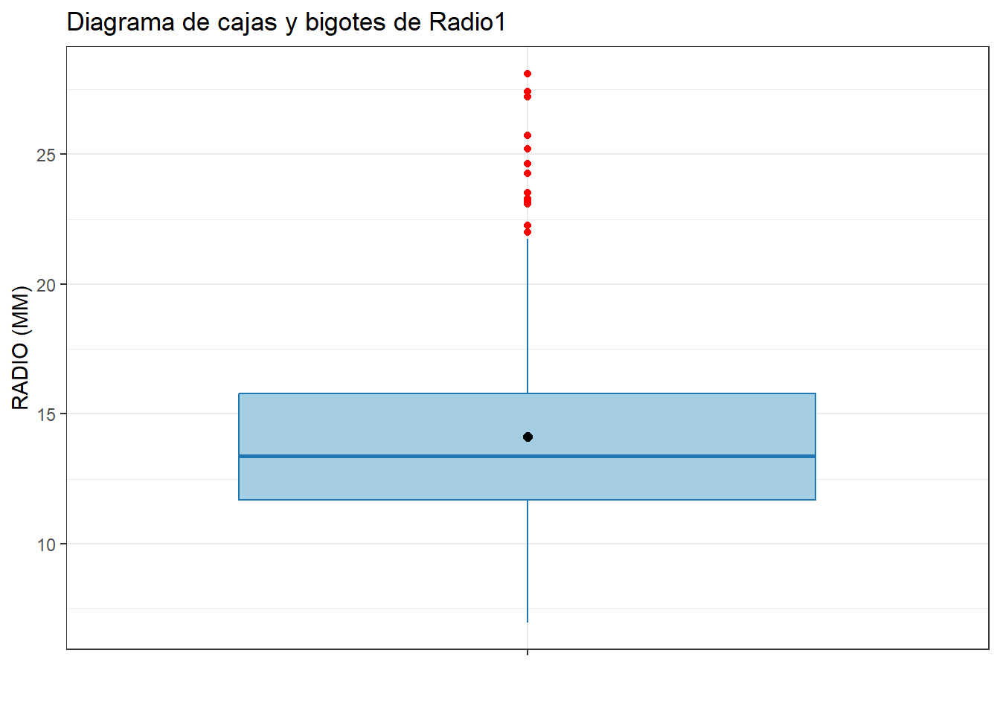
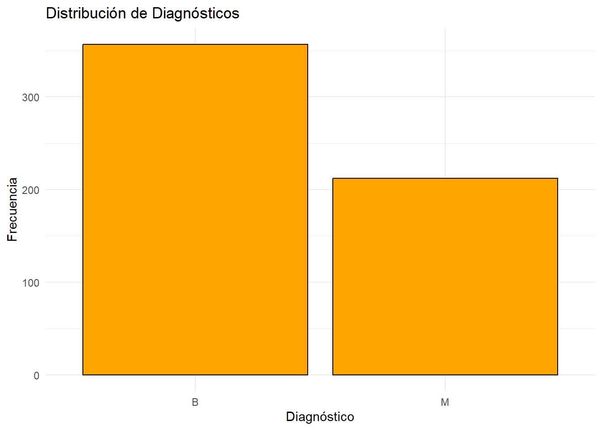
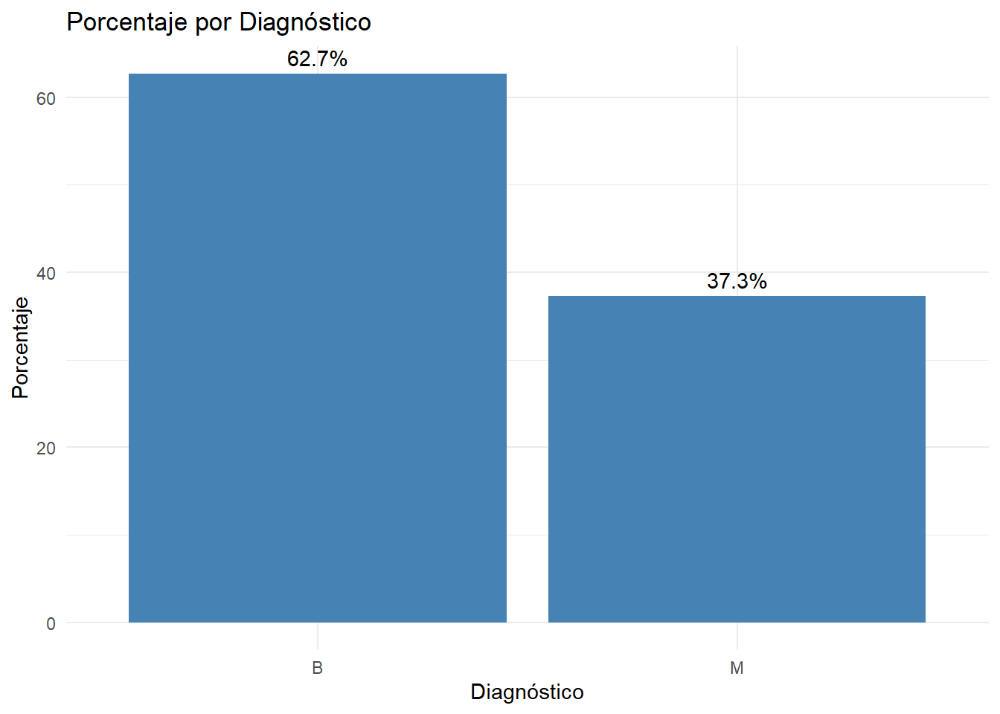

Chapter 5 Análisis univariante
5.1 Variables numéricas
## Estadísticas descriptivas de radius1:## Media: 14.12729## Mediana: 13.37## Desviación estándar: 3.524049## Rango intercuartílico: 4.08## Rango: 6.981 - 28.11# Histograma básico
ggplot(df, aes(x = radius1)) +
geom_histogram(bins = 30, fill = "skyblue", color = "black") +
theme_minimal() +
labs(title = "Histograma de radius1", x = "Radius1", y = "Frecuencia")
# Histograma con densidad
ggplot(df, aes(x = radius1, y = after_stat(density))) +
geom_histogram(bins = 30, fill = "lightblue", alpha = 0.6) +
geom_density(color = "red", size = 1) +
theme_minimal() +
labs(title = "Histograma + Densidad de radius1", x = "Radius1", y = "Densidad")## Warning: Using `size` aesthetic for lines was deprecated in ggplot2 3.4.0.
## ℹ Please use `linewidth` instead.
## This warning is displayed once every 8 hours.
## Call `lifecycle::last_lifecycle_warnings()` to see where this warning was
## generated.
df %>%
ggplot(aes(x = "", y = radius1)) +
geom_boxplot(fill = "#a6cee3", color = "#1f78b4", outlier.color = "red") +
stat_summary(
fun = mean,
geom = "point",
shape = 20,
size = 3,
color = "black"
) +
labs(
title = "Diagrama de cajas y bigotes de Radio1",
x = "",
y = "RADIO (MM)"
) +
theme_bw()
Se puede observar cierta asimetría en los datos de la distribución radius1. Además, se aprecia un sesgo hacia la derecha y una cantidad significativa de valores atípicos altos, esto indica que la mayoría de los radios tienen un tamaño estándar, pero existen algunos valores excepcionalmente grandes. Estos casos atípicos influyen significativamente en la media y en la desviación estándar de la distribución.
5.2 Variables categóricas
# Gráfico de barras básico
ggplot(df, aes(x = Diagnosis)) +
geom_bar(fill = "orange", color = "black") +
theme_minimal() +
labs(title = "Distribución de Diagnósticos", x = "Diagnóstico", y = "Frecuencia")
# Gráfico de barras con porcentajes
df %>%
count(Diagnosis) %>%
mutate(pct = n / sum(n) * 100) %>%
ggplot(aes(x = Diagnosis, y = pct)) +
geom_col(fill = "steelblue") +
geom_text(aes(label = paste0(round(pct,1), "%")), vjust = -0.5) +
theme_minimal() +
labs(title = "Porcentaje por Diagnóstico", x = "Diagnóstico", y = "Porcentaje")
## Frecuencias relativas de diagnósticos:##
## B M
## 0.6274165 0.3725835La mayoría de los pacientes (62.7%) presentan tumores de tipo B (benignos), mientras que el 37.3% corresponde al tipo M (malignos).